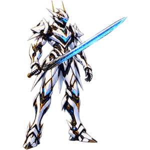

준비 중—
동작 프레임선택하면 해당 순간으로 이동합니다
기본 동작 보기
제작·재생 기록
기술명은 시안용 가칭입니다. 외형 승인본 유지 · 몸 64프레임 · 효과 180프레임. 천검 포위는 전용 소환검 5종이 곡선 우회·S자 추격·대각선 관통·급전환을 각자의 타이밍과 타격점으로 이어갑니다. 용궤 검격과 창천 종단은 지면을 휘감는 용 검기를 사용합니다. 무음 시안이며 피해 수치·등급·획득·운영 전투는 미설정입니다.

PROJECT V / MERCENARY
거신 검영 · 거대한 대검의 잔상과 최후의 내려베기
기술명은 시안용 가칭입니다. 외형 승인본 유지 · 몸 64프레임 · 효과 180프레임. 천검 포위는 전용 소환검 5종이 곡선 우회·S자 추격·대각선 관통·급전환을 각자의 타이밍과 타격점으로 이어갑니다. 용궤 검격과 창천 종단은 지면을 휘감는 용 검기를 사용합니다. 무음 시안이며 피해 수치·등급·획득·운영 전투는 미설정입니다.